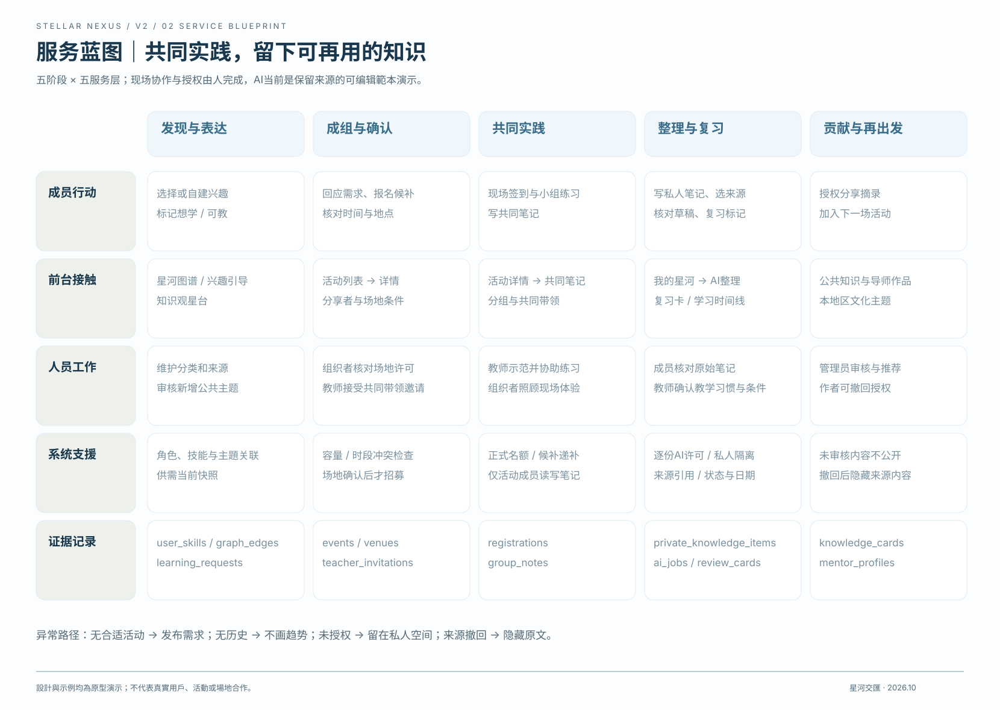
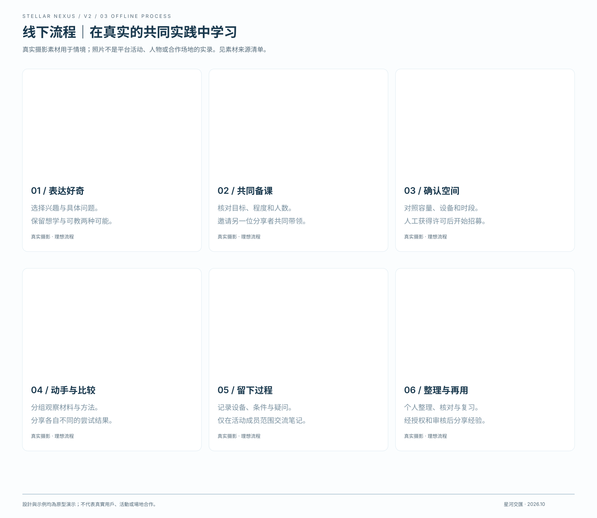
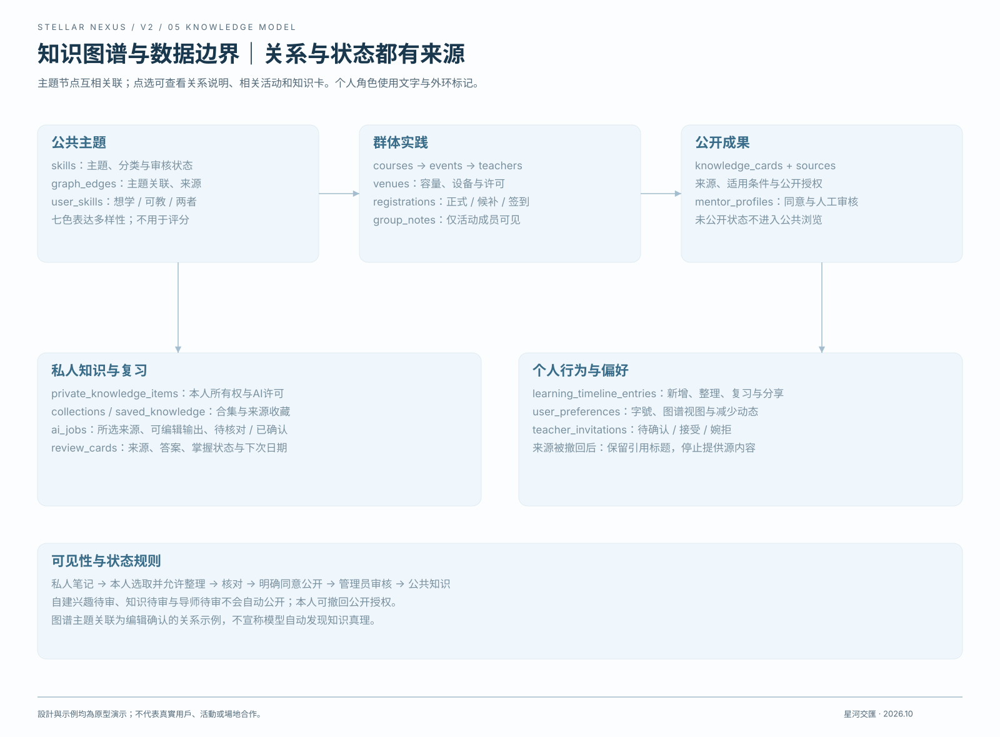
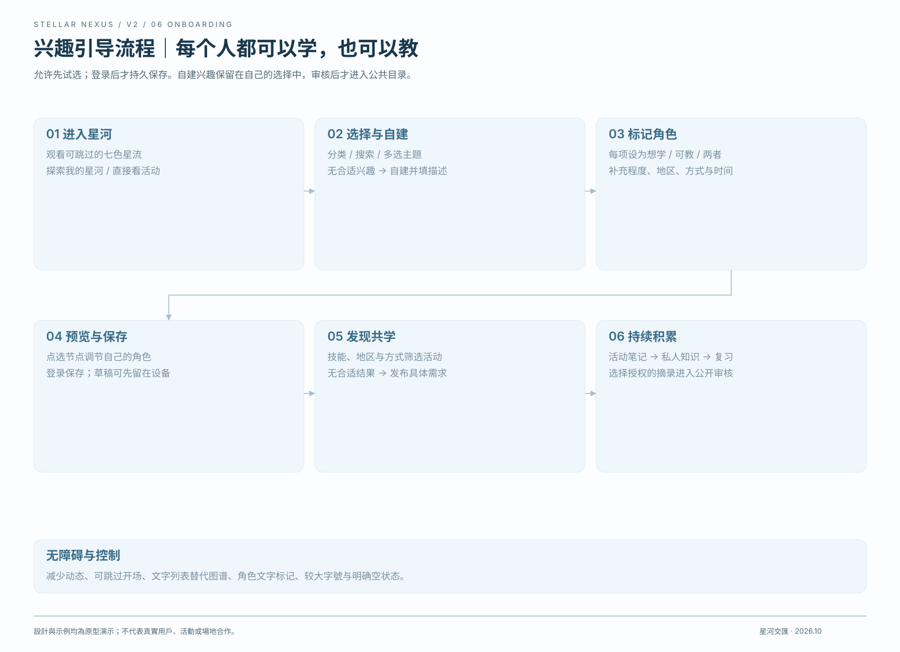

<!doctype html><html lang="zh-Hans"><meta charset="utf-8"><meta name="viewport" content="width=device-width,initial-scale=1"><title>V2 Sitemap、服务蓝图与流程</title><style>body{font:16px/1.9 system-ui,"Microsoft JhengHei",sans-serif;background:#f8f9f7;color:#233d4d;margin:0}main{max-width:1080px;margin:auto;padding:56px 28px}h1{font-size:38px;line-height:1.4}h2{margin-top:42px}p,li{color:#536978}a{color:#396c88}nav{display:flex;flex-wrap:wrap;gap:12px;margin:30px 0}nav a{padding:12px 18px;border:1px solid #dfe5e6;background:white;text-decoration:none}img{max-width:100%;height:auto}section{margin:35px 0}pre{white-space:pre-wrap;font:inherit}small{color:#536978}</style><main><small>STELLAR NEXUS / V2 · 2026.10</small><h1>V2 Sitemap、服务蓝图与流程</h1><section><h2>01 / 网站Sitemap</h2><a href="../public/boards/01-sitemap.svg"></a></section><section><h2>02 / 服务蓝图</h2><a href="../public/boards/02-service-blueprint.svg"></a></section><section><h2>03 / 线下服务流程</h2><a href="../public/boards/03-offline-journey.svg"></a></section><section><h2>04 / 具体概念图</h2><a href="../public/boards/04-concept.svg"></a></section><section><h2>05 / 知识图谱与数据边界</h2><a href="../public/boards/05-data-model.svg"></a></section><section><h2>06 / 兴趣选择流程</h2><a href="../public/boards/06-onboarding-flow.svg"></a></section></main></html>